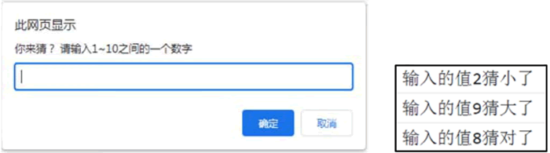

首页 > 编程笔记
JavaScript while和do while循环
对于一些需要反复执行并且有规律的代码，可以采用循环结构进行编写。循环结构能够使代码结构更加清晰，有效减少重复代码。
例如，一张纸的厚度大约是 0.1 毫米，假设这张纸可以无限次对折，计算对折几次可以超过珠峰（8844.43米）？
do while 循环的语法格式为：
在输入框中依次输入 2、9 和 8，程序在 Chrome 浏览器控制台中运行结果是：
例如，对比下面两段程序：
while循环
while 循环根据循环条件的真假决定是否执行循环体，语法格式为：
while (循环条件) {
循环代码块;
}
while循环在每次循环前先判断循环条件，如果条件为真，则执行代码块，否则跳出循环。例如，一张纸的厚度大约是 0.1 毫米，假设这张纸可以无限次对折，计算对折几次可以超过珠峰（8844.43米）？
var h = 0.1;
var count = 0; //折叠次数
while (h < 8844430) {
h = h * 2;
count++;
}
console.log(count);
在Chrome浏览器控制台中的运行结果为：
27
do while循环
do while 循环是 while 循环的变种，在 do while 循环中，无论循环条件是否为真，都会至少执行一次代码块。do while 循环的语法格式为：
do {
循环代码块;
} while (循环条件);
例如，下面程序实现的是一个猜数字游戏：
var random = 8;
do {
var num = prompt('你来猜？ 请输入1～10之间的一个数字');
if (num > random) {
console.log('输入的值'+num+'猜大了');
} else if (num < random) {
console.log('输入的值'+num+'猜小了');
} else {
console.log('输入的值'+num+'猜对了');
}
} while (num != random);
程序中，变量 random 代表用户要猜的一个数字，值为 8。变量 num 保存用户输入的值，循环条件为“num != random”。在循环体中，首先弹出输入框获取用户输入，然后判断输入值 num 和 random 的关系，如果相等则循环结束，输入框消失。在输入框中依次输入 2、9 和 8，程序在 Chrome 浏览器控制台中运行结果是：

while和do while的区别
while 循环首先判断循环条件是否成立，条件不满足不执行循环体；do while 循环先执行循环体，再判断循环条件是否成立，即使条件不成立，也执行了一次循环体。例如，对比下面两段程序：
var n = 10;
while (n < 10) {
console.log(n);
}
运行结果：
无输出
var n = 10;
do {
console.log(n);
} while (n < 10);
运行结果：
10
在上述两段程序中，n 的初值相同，循环条件和循环体也相同，但结果不同。关注公众号「站长严长生」，在手机上阅读所有教程，随时随地都能学习。内含一款搜索神器，免费下载全网书籍和视频。

微信扫码关注公众号